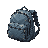
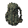
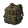

TIDELINE · GEAR SHEET
装备清单
这一批是新加的装备图标：4 把武器 + 6 级头盔 +
6 级身体护甲，另加 1 张可选背包。它们不占背包格，只出现在三处：
局内背包顶部 6 格装备条、尸体面板顶部 3 格装备区（都是 24px 图标），藏身处装备区（34px 图标）。
已完成 17 / 17。清单直接读
已完成 17 / 17。清单直接读
js/data.js，改完数值重跑
node gen-gear-sheet.js 就会更新。
贴图规格
尺寸 48 × 48 像素，PNG，透明背景。主体占满中央 40 × 40，四周留 4px。
显示尺寸 局内装备条为 24px，藏身处为 34px，细节要粗、要能一眼认出，别画密集细花纹和小字。
画法 物品图标可以用比场景更适合辨识的展示角度，不必受 75° 俯视约束。左上光源，硬边像素，无抗锯齿、无外发光、不画投影。
命名 rifle.png shotgun.png smg.png pistol.png；helmet1.png～helmet6.png；body1.png～body6.png；bag.png。
位置 tide/assets/gear/ 目录下。
等级递进原则
1 → 3 级 能"看穿"的材料：布、纤维、织带。靠材质和缺口区分。
4 → 6 级 硬质插板/外壳轮廓，靠厚度、覆盖面积、附件数量区分，不要只换颜色。
剪影优先 六张摆在一起时，只看黑色剪影就该能排出 1～6 的顺序：越低越软塌越窄，越高越方越宽越重。
调色 低饱和旧化。头盔走灰绿/哑光黑，护甲走土黄→军绿→深灰，高级别加一点脏铜色螺栓当高光点。
分级色只是辅助：Lv1 灰绿 · Lv2 · Lv3 · Lv4 · Lv5 · Lv6
武器weapon4 张
头盔helmet6 张 · Lv1–Lv6
身体护甲body armor6 张 · Lv1–Lv6
背包backpack5 张 · 决定携带容量


